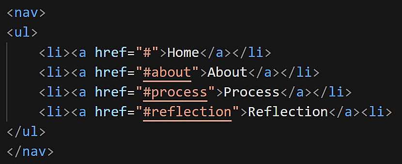
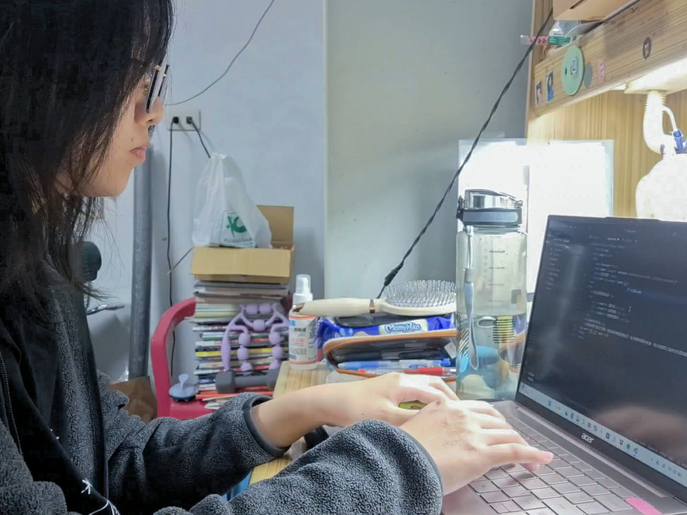

My Web Learning Journey
A self-learning project about building my first website.
A self-learning project about building my first website.
這個網站是在我高二寒假期間，經過對自己未來方向的探索後，因對網頁設計產生興趣，
而決定從零開始學習網頁架設所完成的實驗性作品，整體程式碼是透過 Visual Studio Code 所撰寫而成。
從最初認識網頁的基本概念，
到實際動手規劃頁面架構、調整版面配置與修改樣式設計，這個網站不僅是一個成果展示，
同時也記錄了學習網站設計的歷程。
在剛開始接觸時，我對網頁設計幾乎一無所知，然而透過查詢資料後，
我便理解網頁主要是由 HTML 、 CSS 與 JavaScript 所構成，
HTML 負責建立網頁的整體架構與內容； CSS 是影響版面配置與視覺呈現的重要關鍵，
能讓網頁更美觀，而 JavaScript 讓網站更具互動性和動態效果。透過這次的學習經驗，我培養了能用 HTML 與 CSS 製作基礎網頁的能力。
在學習網頁設計的初期，我先觀看了一小時內完成從無到有的客製化網站架設
，從基礎概念開始認識網頁的架構與運作方式，接著，我嘗試下載網路上的免費網站範本，
透過實際修改內容，初步體會編輯網頁的流程與效果。
之後，我進一步了解網站是如何被發布到網路上供他人瀏覽，學習到需要透過「網域」與「主機空間」來放置完成的網站，
才能產生可供存取的「網址」。
然而，單純使用範本進行編輯對我而言稍顯無趣，
因此我又觀看了HTML 與 CSS 的入門教學
，開始學習自行撰寫網頁，並從網站結構到版面美化逐步完成實作。
透過以上的學習與操作，我不僅更全面地理解網頁製作的流程，也培養了從基礎建構到美化版面的能力。

在使用CSS美化導覽列的過程中，我嘗試調整導覽列的外邊距，但無論如何修改數值，網站畫面卻始終沒有任何變化， 我便檢查了先前撰寫的程式碼，才猛然發現自己誤將li打成il，這個看似微小的錯誤卻讓我深刻體會到， 撰寫程式不僅需要細心確認每個細節，在面對除錯與修正時，更需要保持耐心與冷靜，才能順利找出問題並解決。
我是個容易因一時的熱情而投入自己感興趣事物的人，但也常因動力不足而半途而廢。
因此，這次能一步一步完成網站的架構與美化，對我而言格外難得且具有意義。
在學習過程中難免出現各種小錯誤，而我也從最初的陌生與不熟悉，逐漸轉變為當畫面呈現不如預期時，
能主動思考應該調整哪些設定，才能更接近自己想像中的樣子。在查詢資料的過程中，
我便得知網頁製作其實還有許多進階方法與工具可運用，而自己目前僅停留在入門階段，且在響應式設計的部分
做的還不是很好。
在完成網站後，我更清楚看見自身能力的不足，也明白目前所學不過是網頁設計的起點。
這次透過觀看影片自學網頁設計的經驗對我而言十分珍貴。
它讓我明白，原來自己也能完成過去認為做不到的事情，並從中學會基礎的程式撰寫方式。
那種從零開始、逐步完成一件作品使我獲得極大的成就感。
而我也清楚，目前完成的只是運用基礎 HTML 與 CSS 製作出的相對簡易網站，
若要讓網站具備更豐富的互動性與視覺效果，仍需透過 JavaScript 進行程式撰寫。
在這次學習中，我僅接觸到 HTML 與 CSS，對 JavaScript 雖具基本概念，但未實際撰寫，
理解仍停留在概念層面。
正因如此，這讓我更確信未來仍有許多值得我探索與學習的方向。
這次的自學歷程，起初只是好奇自己能否完成網站製作，然而在實際嘗試之後，
我不僅看見了自己的可能性，也體會到只要願意投入心力並持續努力，一定能在過程中獲得成長與收穫。

▲ 我在邊看影片邊學打程式的照片